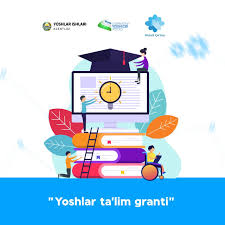

Oliy ta’lim muassasalarida stipendiyalar miqdori oshirilishi kutilmoqda. Talabalarning moddiy ahvolini yaxshilash va o’qishga bo’lgan intilishlarini kuchaytirish maqsadida bu yangilik muhim ahamiyat kasb etadi. Ushbu o’zgarishlar talabalarning birinchi navbatda bilim olishga e’tibor qaratishlariga imkon yaratadi. Bu esa kelajakda malakali mutaxassislar yetishib chiqishiga zamin tayyorlaydi. Stipendiyalar miqdorining oshirilishi talabalar uchun rag’batlantiruvchi omil bo’lishi shubhasizdir.
Talabalar uchun keng qamrovli onlayn ta’lim platformalari ishga tushirilmoqda. Endilikda talabalar o’z uyidan turib turli fanlarni chuqurroq o’rganishlari, qo’shimcha materiallar bilan tanishishlari va o’z malakalarini oshirishlari mumkin bo’ladi. Bu platformalar malaka oshirish kurslari, webinar va magistrlik dasturlarini o’z ichiga oladi. Bu esa talabalarning zamonaviy bilim va ko’nikmalarga ega bo’lishlarini ta’minlaydi. Onlayn ta’lim imkoniyatlarining kengayishi, ayniqsa, olis hududlarda yashovchi talabalar uchun katta foyda keltiradi.

Talabalar o’rtasida tadbirkorlikni rivojlantirishga qaratilgan yangi dasturlar yo’lga qo’yilmoqda. Yosh tadbirkorlarni qo’llab-quvvatlash, ularga o’z g’oyalarini amalga oshirishda yordam berish bu dasturlarning asosiy maqsadidir. Biznes-inkubatorlar va startap loyihalarini qo’llab-quvvatlash markazlari tashkil etilmoqda. Bu esa talabalarni kelajakda ish o’rinlari yaratuvchi muvaffaqiyatli tadbirkorlar bo’lib ulg’ayishiga undaydi.
Xalqaro talaba almashinuvi dasturlari yanada kengaytirilmoqda. Bu dasturlar orqali talabalar dunyoning eng yaxshi universitetlarida o’qish, xorijiy madaniyatlar bilan tanishish va xalqaro aloqalarni o’rnatish imkoniyatiga ega bo’ladilar. Bunday tajribalar talabalarning dunyoqarashini kengaytiradi va kelajak karyeralarida muhim rol o’ynaydi. Bu esa ta’limning global standartlarga moslashuvini ta’minlashga yordam beradi.